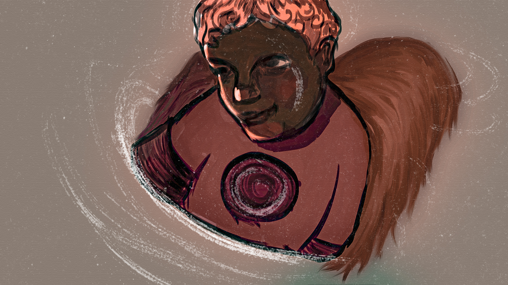
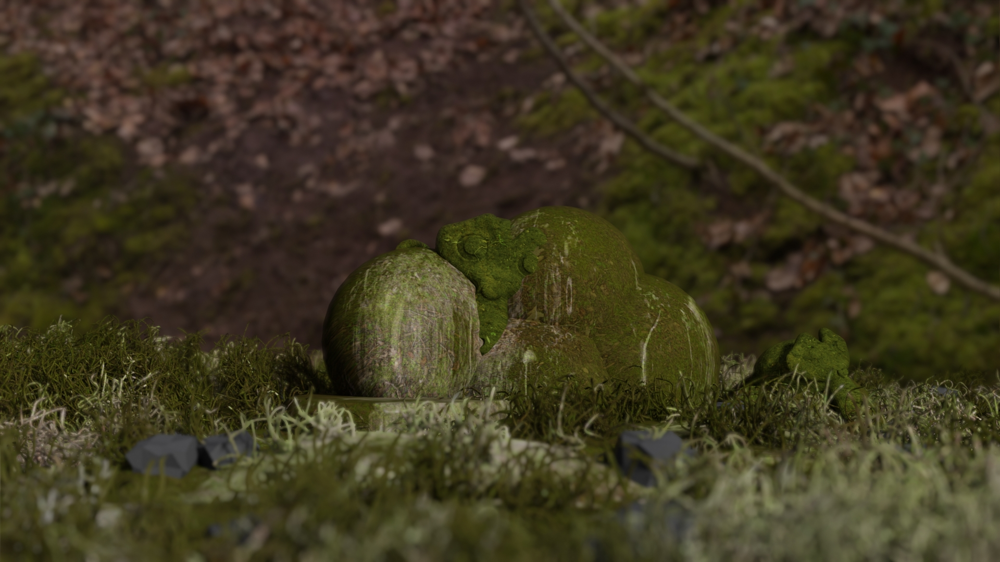
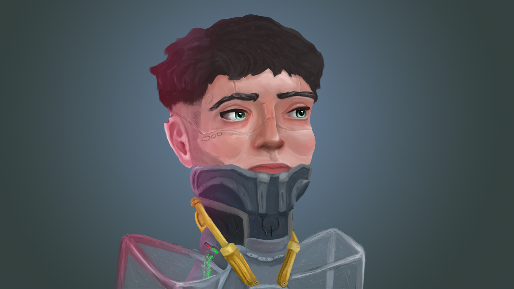
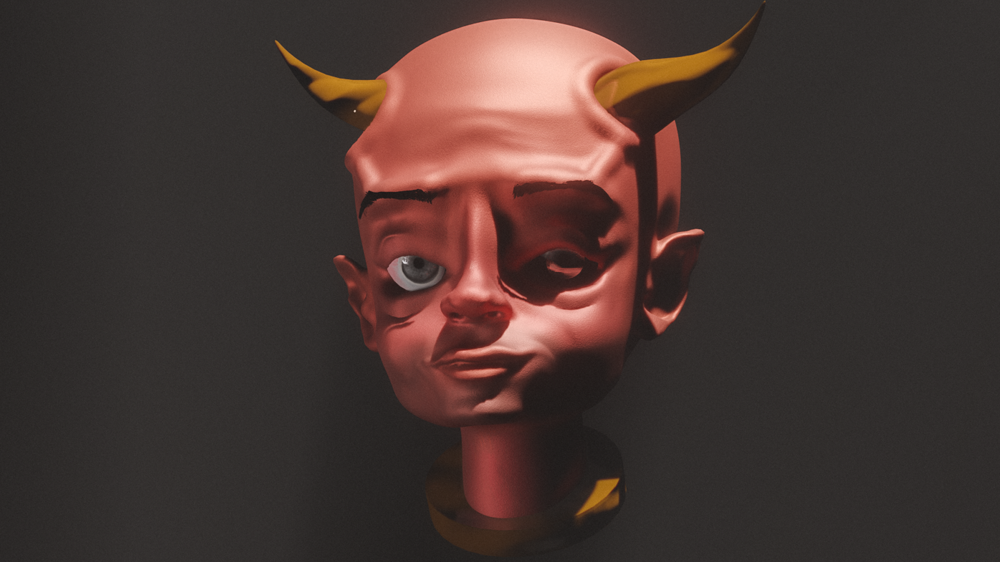
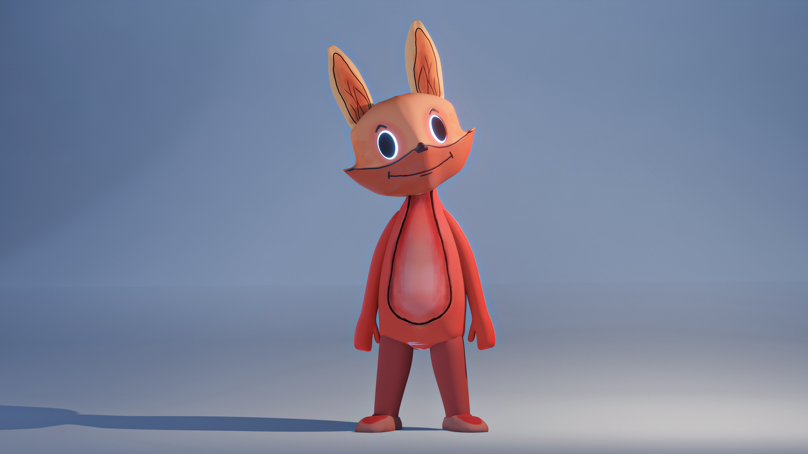
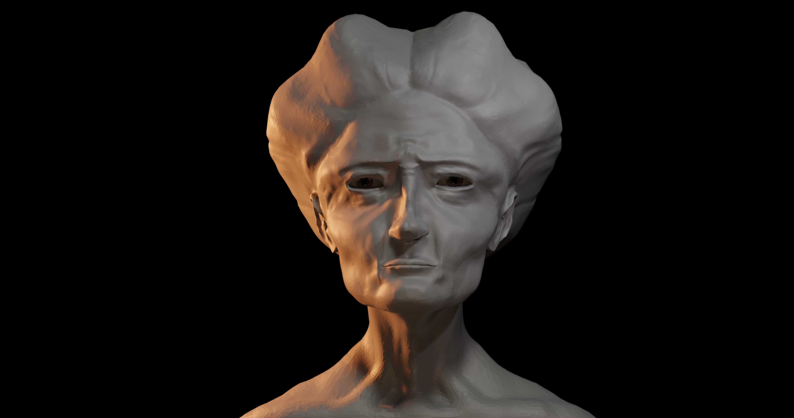
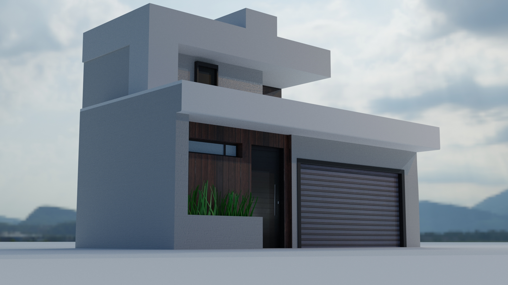

Quem sou eu
Sou uma artista 3d fascinada pela tecnologia e tudo o que vem dela, a maioria dos meus trabalhos são virtuais, logo sou adepta a esse mundo através da tela. o que mais gosto de fazer é escrever, programar, modelar em 3d e produzir animações. Apesar do 3d ser a área em que mais gosto de estar, estudo como posso integra-la ao 2d e às demais áreas, não só as que pertencem a arte em si. então, não me prendendo a uma coisa só. e este fato diz muito sobre mim: sou uma artista interdisciplinar, gosto de tudo e procuro trazer para as pessoas esse tudo que faz de mim ser quem eu sou.
Conheça meus trabalhos







